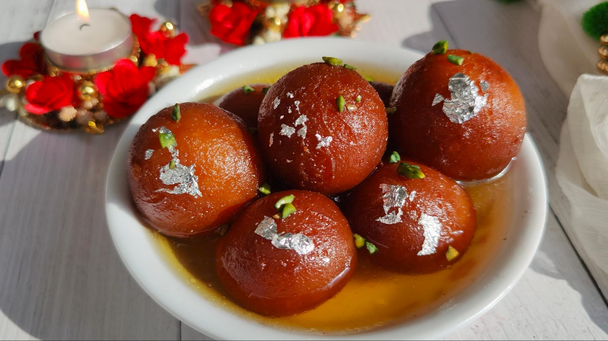

Famous Indian Foods
Home |
Destinations |
Places |
Gallery |
Contact
Introduction
Indian cuisine is famous for its rich flavours, spices, and variety. Every region of India has its own traditional dishes, including curries, rice dishes, snacks, and sweets.
Top 5 Indian Dishes
- Butter Chicken
- Masala Dosa
- Biryani
- Chole Bhature
- Gulab Jamun
Food Categories
- North Indian
- Butter Chicken
- Chole Bhature
- South Indian
- Street Food
- Desserts
Food Descriptions
- Biryani
- A flavourful rice dish prepared with spices and vegetables or meat.
- Masala Dosa
- A crispy South Indian dish made from fermented batter and filled with spiced potatoes.
- Gulab Jamun
- A popular Indian sweet served in sugar syrup.
Indian Food Gallery



Back to Top